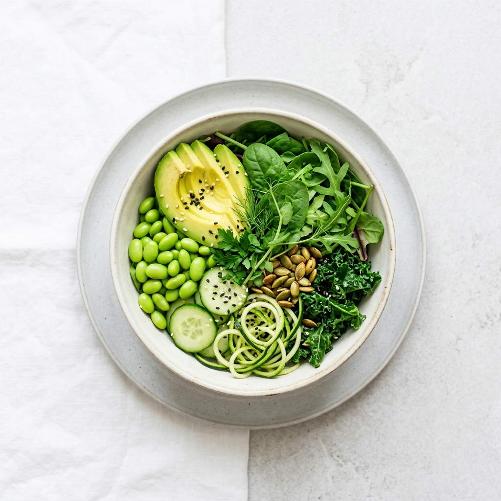

Dott. Roberto Soave
Dietista & Esperto di Nutrizione Clinica
La Formazione Clinica
Il mio percorso inizia con la Laurea in Dietistica nel 2006 presso l'Università Cattolica di Roma. Ho consolidato le mie basi scientifiche attraverso una tesi sperimentale (divenuta poi pubblicazione) e frequentando per anni i reparti di endocrinologia e dietologia. Questo mi ha permesso di sviluppare un approccio rigorosamente medico alla nutrizione.
L'Esperienza Aziendale e il Problem Solving
Non mi sono fermato alla teoria. Per oltre 10 anni ho lavorato sul campo nella grande ristorazione collettiva e ospedaliera, ricoprendo ruoli di altissima responsabilità gestionale e commerciale per colossi del settore. Ho gestito protocolli HACCP, mense cliniche e gare d'appalto. Questa "vita in viaggio" mi ha forgiato, insegnandomi l'organizzazione estrema e il problem solving. Nel 2021, ho scelto di fermarmi per dedicare tutta questa esperienza all'ascolto "uno a uno" dei miei pazienti, aprendo il mio studio a Roma.

Il Dietista con l'anima da Cuoco
L'ingrediente segreto del mio metodo? La profonda passione per la cucina. Ho un passato da cuoco e conosco intimamente i metodi di cottura e la preparazione delle materie prime. Quando elaboro un piano alimentare, non consegno mai un foglio triste con "50g di riso in bianco", ma fornisco veri consigli culinari pratici e gustosi. La dieta deve essere un piacere sostenibile, non una punizione da sopportare.
- Laureato e regolarmente iscritto all'albo
- Background nella ricerca clinica (Endocrinologia)
- Forte competenza nelle tecniche di cottura sane